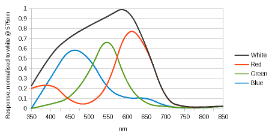
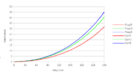
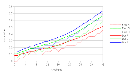
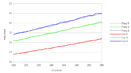
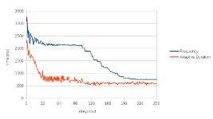

Frequently Asked Questions
- What was changed in ColorHug2?
- Can I still buy the original ColorHug?
- Can upgrade a ColorHug to a ColorHug2?
- Why is the ColorHug2 more expensive than the original ColorHug?
- How does the device work?
- How do the different models compare?
- Is the ColorHug OpenHardware?
- How other products compare?
- What do I do if the device stops working?
- How much is shipping?
- What do the LEDs mean?
- Can I make my external display match my laptop screen?
- Can I make my display match what is printed?
- Why is my screen "wrong" after calibrating?
- Where is the .icc file stored after I've calibrated?
- Is there a way to boot the Live CD from an USB drive?
- What data is transmitted to hughski.com?
- I've erased my factory calibration!
- What payment methods are accepted?
- I've found a bug or missing feature, what do I do?
- I sent money for a device over two weeks ago, where is it?
- Flashing failed, is my device now a brick!?
- Does the device work on Windows or OS X?
- Does the device work on Solaris and FreeBSD?
- The LiveCD doesn't work on my old Mac!
- How do I use the ColorHug with a projector?
- Why does the ColorHug not work with ArgyllCMS?
- What are the minimum software versions?
- Why has my display got an obvious color shift after calibration?
- How can I buy a HugStrap?
- How can I buy the new gasket?
- Since upgrading to ArgyllCMS 1.5.0 the device no longer works?
- What's the difference between the measurement modes?
What was changed in ColorHug2?
The new ColorHug2 is different from the original ColorHug in four main ways:
{kind=link}
- The sensor has been upgraded from a $1 TAOS sensor to a $30 JENCOLOR sensor from MAZeT. This produces a true XYZ reading and typically doesn't need a CCMX to get decent results on most consumer hardware. This was the #1 stumbling block for the initial ColorHug device, as anything outside quite-close-to-sRGB needed a correction matrix.
- The PCB now contains on-board SRAM so it can do latency, rise-fall and fall-rise measurements. This means we can do things like measuring the true latency delays on real CPU+GPU+display combinations. I'm expecting to use the hi-speed acquisition and storage capabilities for other exciting things in the future.
- The PCB contains a temperature sensor to be able to compensate outside of the 20-40 °C calibrated range. I've got this working in so much that it returns the right temperature, but the compensation code needs work. This will be addressed with future firmware updates.
- Microsoft Windows is now a supported platform, with the flash, CCMX and latency tools working as well there as they do in Linux. Calibration still has to be done in Linux, although I'm hoping to make that work in Windows too.
Why is the ColorHug2 more expensive than the original ColorHug?
The ColorHug2 is slightly more expensive than the original design. This is due to the increased component costs in the last 2 years, increased complexity of the design and also due to including free signed-for/tracked shipping in the base price. We're also shipping a 4GB LiveUSB to customers now, rather than the space-limited and slow LiveCD.
Can I still buy the original ColorHug?
Unfortunately no, we're a small company and can't afford to keep large amounts of stock.
Can upgrade a ColorHug to a ColorHug2?
Not really. Although the plastic casing is the same, the PCB contains many more ICs than the first version and the optics interface is different. Considering the PCB is the most expensive component to produce it wouldn't be cost effective for us to upgrade a device. Don't worry though, the original ColorHug devices are still supported as they have a large number of people using them every day.
How does the device work?
The original ColorHug contained a simple color sensor with 64 pixels — 16 red, 16 blue, 16 green, and 16 clear. The ColorHug2 device contains a much improved JENCOLOR sensor from MAZeT that returns true XYZ values. This XYZ color values are sent from the ColorHug to the host and the set of measurements are processed into an ICC file. The gamma mismatch problem was the #1 stumbling block for the original ColorHug device, as anything outside quite-close-to-sRGB needed a correction matrix.
{kind=link}
How do the different models compare?
| ColorHug | ColorHug2 | ColorHug+ | |
|---|---|---|---|
| Display Calibration | ![[yes]](img/emblem-yes.png) [1] [1] |
|
|
| Printer Calibration | |
||
| Spot Measurements | |
||
| Latency Measurements | |
||
| Output | deviceRGB, absXYZ | deviceRGB, absXYZ, temperature | Full 400-780 nm spectra, absXYZ |
| Included accessories | LiveCD, USB cable, HugStrap[2] | 4G LiveUSB, USB cable, HugStrap | 4G LiveUSB, USB cable, HugStrap |
| Technology | Tristimulus primary-adapted colorimeter | Tristimulus JENCOLOR colorimeter | Linear spectrograph |
| Price | £60 + postage | £85 (free worldwide signed-for postage included) | £300 (free worldwide signed-for postage included) |
| Size | 32x43x21 mm | 32x43x21 mm | 75x75x32 mm |
| Expected User | Consumer artists and photographers | Consumer artists and photographers | Professional artists, prosumer photographers and color scientists |
| Availability | Over 2200 sold with stable firmware | Over 30 sold with in-development firmware | A prototype exists |
| Free updates for early-adoptors | Firmware, new screen gasket, HugStrap | Nothing yet | Nothing yet |
[1] Only devices with primaries close to sRGB, or with a CCMX file.
[2] Early devices did not include this, and can be upgraded for free.
Is the ColorHug OpenHardware?
Yes! ColorHug is now officially certified open source hardware by
OSHWA.
Our UID is UK000001.
The licences chosen for the different parts of the project allow you to copy, remix, redesign or repurpose the hardware or even build a device from scratch from the hardware plans and the freely downloadable firmware. There are no patents or design registrations, nor any intellectual property that has to be licenced.
There is one small limitation. You can build your own ColorHug device and call it a ColorHug, but you cannot use the three color logo as it is a trademark of Hughski Limited. This was done after taking legal advice to help preserve the community, and to stop a company selling a substandard official device that would tarnish the brand and make Hughski Limited look bad.
The Licences used in the project are thus:
| Schematic: | CERNv1.1+ |
| PCB: | CERNv1.1+ |
| Housing: | CC-BY-SA |
| Documentation: | CC-BY-SA |
| Firmware: | GPLv2+ |
| Client tools: | GPLv2+ |
| Connectors: | Royalty free |
How other products compare?
| Hughski ColorHug | Datacolor Spyder Pro | Pantone Huey | X-Rite ColorMunki | |
|---|---|---|---|---|
| Screen calibration | |
|
|
|
| Printer calibration | |
|||
| Self calibration mode | |
|||
| Ambient capture | (Lux and XYZ) |
(Just Lux) |
(Just Lux) |
(Lux and XYZ) |
| Supported calibration matrices | 64 flash (LCD, CRT, Projector + 5 reserved types) | 2 fixed (LCD and CRT) | 2 fixed (LCD and CRT) | n/a |
| Compatible display technologies | LCD, LED | LCD, LED, CRT | LCD, LED, CRT | LCD, LED, CRT, Projector |
| IR filtered | |
|
|
|
| Licencing | Open source | Proprietary | Proprietary | Proprietary |
| Speed to measure 200 samples | 6 minutes | 5 minutes | 5 minutes | 3 minutes |
| Client software support | Linux | Microsoft Windows | Microsoft Windows, Apple OS X | Microsoft Windows, Apple OS X |
| Price (including tax) | £60 | £90 | £115 | £280 |
The above table demonstrates how the Hughski ColorHug compares to other similar products on the market. The key advantages are the open source licences and open hardware design which means you can review and modify all aspects of the product, and of course the low price.
What do I do if the device stops working?
- Check the device is plugged in!
- Check
dmesgto see if the device is detected, if so check the permissions on the USB device. - Check the LEDs briefly flash when the device is plugged in.
- Use a different USB cable to the one supplied in order to check whether the cable is at fault.
If the device does not work, or is otherwise faulty please email us for advice. If we agree that the ColorHug is faulty and you return it to us then you can request a full refund or a replacement device.
How much is shipping?
For ColorHug2, ColorHugALS and ColorHug+ worldwide tracked/signed-for postage is included in the cost of the device.
Packages normally arrive in the UK and western Europe within three days and eastern Europe within five working days. Delivery to the rest of the world usually takes between five to seven working days although it can take a lot longer than this for some counties.
What do the LEDs mean?
There are two LEDs in the ColorHug, one green and one red. The LEDs are used in the following way:
- Both LEDs flash on then off for a split second when the hardware is plugged in.
- The green LED flashes quickly three times when the sensor is locked.
- The red and green LEDs flash slowly alternately when the device is in bootloader mode and needs reflashing with new firmware.
- The red LED displays morse code in the event of a fatal device error.
Can I make my external display match my laptop screen?
You can certainly get close, but you really don't want to if you don't have to. Imagine buying a $45,000 Ferrari with a 2 liter engine, and another $70,000 Ferrari with a 4 liter engine. You want the performance to match between the two cars. The only way to do this would be to make the 4 liter car much less powerful so that it matches the performance of the 2 liter car. In the context of display calibration you would be limiting the better screen to the range of colors the less expensive screen can display.
There are also other issues for making the displays "match". Imagine if the laptop screen ouput approximately a red primary of 620nm, and the external screen output a primary of 630nm. You can't change the primary as it's due to the chemical composition of screen hardware. You can emulate different XYZ colors using color mixed from other channels, but you can mix colors to make a pink red a deep red.
What you can do with a colorimeter is give each screen a similar whitepoint value, which gets you 90% the way there as your eyes are very sensitive to whitepoint differences (but not absolute values). The ColorHug software defauts to a D65 whitepoint, although you can choose a custom whitepoint using dispcalGUI.
Can I make my display match what is printed?
This is a complex problem indeed, and design companies pay tens of thousands of pounds trying to make this a reality. From a technical level, it's really really hard. Screens are outputting photons (additive, emissive), and the color is affected by things like the ambient level of lighting the room and even the color the room is painted affects the color you see. Paper depends on the color and spectra of the lighting you are using (subtractive, reflective) to view the printed sheet, the ink, the paper color, the paper quality, and many more things. I would suggest any one more interested in this difficult problem reads Real World Color Management which explains a lot of these problems better than I ever can.
One thing the ColorHug can do is fix your display so that at least we're more in control of the display side of the equation. It's not going to make the resulting edited hardcopies any less accurate, and will hopefully be more accurate. You can be sure of one thing, it's certainly never going to match perfectly. :)
Why is my screen "wrong" after calibrating?
If your screen differs much from the idealized sRGB that the ColorHug is calibrated against then the calibration result may be far from ideal. This may happen if you are using an expensive LED display, or a miniature embedded LCD with low bit depth DAC.
To fix this, you just need to load a correction matrix that's close to
your display technology using the colorhug-ccmx GUI program.
At the moment there are not many display types, but this will increase
when those in the ColorHug community with a photospectrometer start
contributing matrices. It's a typical chicken and egg problem, although
if you join the colorhug-users
google group I'll announce new matrices when they are uploaded.
If you've already got a photospectrometer (or can borrow one for a few hours) then please follow the directions here. If you contribute the resulting CCMX file back to us, we can share it with other users and improve their calibration result too. I'm especially interested in odd display types, as these will be very different from the calibration target.
Where is the .icc file stored after I've calibrated?
After calibrating with the GNOME wizard the file is saved in
/home/liveuser/.local/share/icc/ - in the next version of the
LiveCD we're backporting the new export window which will look like this:
{kind=link}
This allows people to either upload the file to a USB drive or upload it to our publicly accessible webspace where it can be stored for up to 7 days and then is automatically deleted.
Is there a way to boot the Live CD from an USB drive?
Just copy the CD image to the device, something like:
sudo dd if=/dev/cdrom of=/dev/sdz bs=1024
The ISO in an isohybrid image and so should boot from pretty much any
kind of boot media.
Make sure /dev/sdz is the device you want to overwrite!
What data is transmitted to hughski.com?
If you choose to update the firmware on your device, the colorhug-flash
program contacts hughski.com and downloads the list of all
the firmware updates. When it does that, the following data is sent to
the server:
- Your IP address
- The current version of the firmware
- The hardware version of the device
- The serial number of the device (e.g. #000337)
We don't actually use this data for anything other than working out what firmware is available to you and any logs are automatically overwritten after 30 days.
The only time any data is transfered to the server is when you update the firmware or download new CCMX matrices, and certainly not for each calibration or sample!
I've erased my factory calibration!
If you're got colorhug-client 0.1.4 or newer installed, just run
colorhug-ccmx and you should be presented with the following
dialog:
Then just click Repair and the device will be back to normal.
What payment methods are accepted?
The preferred way of paying for a device is using PayPal as it's easy for me to track payments and issue refunds. If you've got ideological problems with PayPal, or would rather not use them, then email me when you get the offer to purchase a device and I'll give you my IBAN and BIC numbers for a direct bank transfer.
I've found a bug or missing feature, what do I do?
Just file a bug in the correct issue tracker. Be sure to write as much detail as possible in the bug report, for instance:
lsusb -vuname -rcolorhug-cmd get-firmware-versioncolorhug-cmd get-hardware-versioncolorhug-cmd get-serial-numbercolorhug-cmd get-calibration-mapcolorhug-cmd list-calibration
I sent money for a device over two weeks ago, where is it?
Normally shipping parcels to Europe takes about 4 working days, but has been known to take up to two weeks, especially to Italy for some reason. Shipping to Africa, Brazil and Russia is meant to take about one week, but it seems parcels seem to get lost for weeks at a time and then turn up without explanation. If the destination is the United States, then double check you've not got a letter from the post office about a held package that has to pay some kind of customs charge or sales tax.
If you've been waiting over two weeks then email me and I can confirm the date I sent the parcel and the serial number. Our policy on lost or missing parcels is this (which is based on how quickly I can file a claim with the UK post office):
- If the package was signed-for then we have to wait 6 weeks from the sent date
- If the package was not signed-for then we have to wait 12 weeks from the sent date
If the parcel has not arrived in the durations above, then I can either (at your choice) offer you a refund of the full amount via PayPal or send another parcel to a different address. If this second delivery also fails, then I can't attempt to send any more, and only a refund will be offered.
Flashing failed, is my device now a brick!?
No.
If the flashing failed (of if the new firmware is bad), the ColorHug
device reverts to a safe startup mode.
The bootloader is always loaded at every startup, and the firmware is
only bootstrapped if it is marked as valid.
The easiest way to tell if you are in bootloader mode is to
look at the LEDs or search for a line like this in
dmesg:
[ 276.933714] generic-usb 0003:04D8:F8DA.0003:
hiddev0,hidraw0: USB HID v1.11 Device [Hughski Ltd. ColorHug (bootloader)]
The easiest thing to do is just to reattempt to update the flash, by
running colorhug-flash again.
If this again fails, just manually boot the firmware like this:
$ colorhug-cmd boot-flash
$ colorhug-cmd set-flash-success 1
Does the device work on Windows or OS X?
The ColorHug can be used on Windows and Apple computers using the LiveCD
and then copying the .icc profile to the destination operating system.
I can't do native device drivers myself, although a few people have said
informally they wanted to work on them.
The device uses the USB HID
protocol, so no digitally signed device drivers should be
required at all.
Does the device work on Solaris and FreeBSD?
There are no plans to support this device on any version of Unix or any of the BSD variants. If somebody needs this then it would be quite easy for them to port the libusb-0.1 demo to another Linux-like operating system although it would not be supported by us.
The LiveCD doesn't work on my old Mac!
If you have an Mac older than 2006 you have an old EFI on your system. You can not upgrade this and normal Linux distribution CDs will not work. Some distributions have been specially modified to work with this type of system. A special Ubuntu distribution exists for this hardware called Ubuntu x64_mac and you can use the Ubuntu PPA to update to the newest firmware.
How do I use the ColorHug with a projector?
Shine the projector onto the ColorHug in a dark room from about 1-2 meters away so there is no shadow. Ensure the ColorHug's aperture is pointing straight towards the center of the colored patches. To increase the sensitivity of the ColorHug, you can remove the aperture hole assembly using a fingernail tucked between the two rubber grommits, although then the room will have to be completely dark.
Why does the ColorHug not work with ArgyllCMS?
To use the ColorHug with the ArgyllCMS tools on the command line ensure
you have set ENABLE_COLORHUG=1 as an environment variable.
This is required because the ColorHug currently doesn't work reliably
across all platforms ArgyllCMS supports.
This is of course set automatically when using the graphical tools.
If you are using ArgyllCMS 1.5.0 or 1.5.1, please also see this FAQ entry about firmware versions.
What are the minimum software versions?
If you're not using the LiveCD you need at least:
argyllcms(Fedora) orargyll(Ubuntu) >= 1.4.0colord>= 0.1.15colorhug-client>= 0.1.4gusb>= 0.1.2
If you're using GNOME, also add:
gnome-color-manager>= 3.2.4gnome-control-center>= 3.2.2
If you're using KDE, also add:
colord-kde
If you're using XFCE or another desktop environment then you can of
course just install colorhug-client to update firmware
and load CCMX files. If you want to use the calibration wizard you can
either install the GNOME dependencies or install the very advanced
program dispcalGUI, although we can't support that ourselves.
Why has my display got an obvious color shift after calibration?
Calibrating to a warmer temperature of D65 is going to look a lot more
blue than is native for some displays.
If the color shift is obviously really wrong, take a look at this
excellent blog post by Pascal.
Usually selecting a closer CCMX in colorhug-ccmx is the solution.
We're working on the firmware design, and the device accuracy for low
light is going up all the time, but this is a problem that affects all
colorimeter devices.
How can I buy a HugStrap?
HugStraps are only available to customers with order numbers less than 1567 and can be purchased here. Order numbers over 1567 (or devices with serial numbers larger than 1598) have a free HugStrap included in the package.
Since upgrading to ArgyllCMS 1.5.0 the device no longer works?
Due to miscommunication between myself and the ArgyllCMS maintainer, ArgyllCMS 1.5.0 and 1.5.1 only works with newer versions of the firmware. The 1.2.0 pre-release firmware adds Win32 and limited OS-X support to the device, but to do this we had to slightly change the communication protocol between the host and the device. The development release (what will become 1.6.0) of ArgyllCMS supports both old and new firmware versions, but if you need to use the latest released version of ArgyllCMS you need to do something like this:
wget http://hughski.com/downloads/colorhug/firmware/colorhug-1.2.0.bin
colorhug-flash --filename colorhug-1.2.0.bin
| ArgyllCMS version | Required firmware version |
|---|---|
< 1.5.0 | 1.0.x |
1.5.0 and 1.5.1 | 1.2.x |
>= 1.6.x | Any |
The Fedora argyllcms-1.5.1-1.fc19 package contains a backported fix,
and this means any version of firmware can be used.
The 1.2.0 firmware also changes the default device measure-mode of the device (see here for more details, so we'd love to hear any reports of results being more accurate or any problems.
How can I buy the gasket upgrade?
The gasket upgrade is only available to customers with order numbers less than 1856 and can be purchased here. Order numbers over 1856 (or device serial numbers greater than 1800) are already using the new design and do not need upgrading.
What's the difference between measurement modes?
There are only two ways of measuring the output of a light-to-frequency device, measuring the pulse width or measuring the number of pulses over a set time.
The simplest way is to measure the number of pulses in a set time interval. This works well when the light level is high so that the quantisation noise is small but does not work well for very dark patches. Although an adaptive algorithm is used (giving dark patches more time), this sample speed is typically half of the pulse-width mode. This mode is the only available mode on firmware versions 1.1.x.
Averaging several pulse durations has the advantage that it can work down to 0.5 Hz, but as the reading gets high (0.5 KHz and above) the measured readings begin to have small aliasing errors introduced. This mode is default on firmware 1.2.0 and newer, although the modes can be switched at runtime. In all tests so far, the 'duration' mode has outperformed the 'frequency' mode when building profiles.
The two modes produce the same absolute readings and should not alter the reported absolute XYZ readings.
|  |  |
|  |  |
{kind=link}
{kind=link}
{kind=link}
{kind=link}
What's included
Already have an original ColorHug?
Get some free stuff to upgrade your device with the latest accessories.